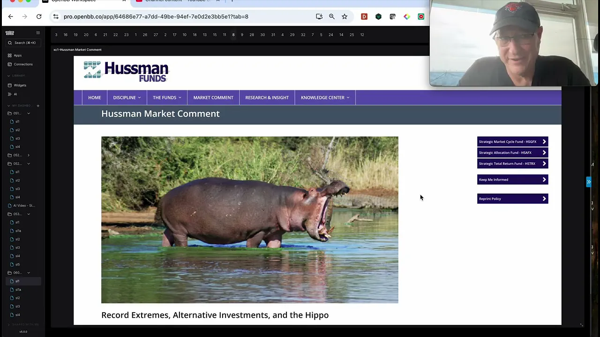
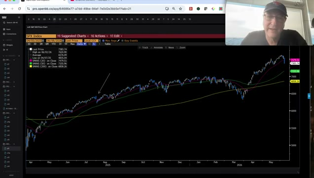
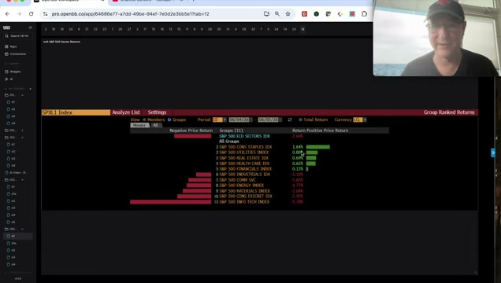
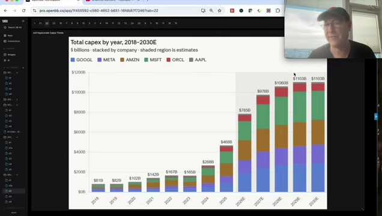

A60-Second Verdict
This is a high-value rotation signal: keep the AI thesis, but stop treating the whole AI complex as one buy-anything trade.
- Core call: Jordi argues the weak week was a necessary rotation after a crowded AI run, not the start of a sustained bear market.
- AI trade update: the discovery phase is over. The next 3 to 6 months should be choppier and more selective, with better risk/reward away from the most crowded memory names.
- Preferred direction: Marvell and optical/co-packaged optics over Micron-style memory, plus energy, batteries, Bitcoin, and application-layer AI led by Eli Lilly.
- Decision boundary: this creates a monitoring framework and watchlist work, not an immediate trade, because no live price, portfolio, or position-sizing check was run.
Processor Decision
BSignal Scorecard
Maturity Sliders
CBasic Information
| Field | Value |
|---|---|
| Title | The Fireworks Show Is Over: Why This Is An AI Rotation, Not a Bubble Unwind |
| Author / channel | Jordi Visser |
| Provider context | 22V / Jordi Visser weekly video email dated 2026-06-07 |
| YouTube publish date | 2026-06-06 |
| Duration | 55:27 |
| Source UID | youtube:w-e47pozaW8 |
| Processed content | Portalmail redirect, YouTube metadata, automatic-caption transcript, pasted provider summary and timestamps, thumbnail, and seven sampled video frames. |
| Not processed | 22V website/PDF links, subscriber papers referenced in the video, live prices, portfolio exposures, and external verification of market data claims. |
youtube:w-e47pozaW8 or this exact source title. This is related to the prior Jordi AI rotation and bottleneck notes, but it is a distinct source.DContent Extraction
| Signal | Plain-English Explanation | Initial Route |
|---|---|---|
| Rotation, not bear market | Jordi argues the S&P and Nasdaq decline followed a very strong run and looked more like a beta cleanse than a macro breakdown. | Macro monitor |
| Fireworks phase is over | The broad catch-up move in memory, semis, and AI infrastructure has become crowded. Future gains require more homework. | Selectivity |
| Memory caution | The source warns against extrapolating token demand directly into DRAM demand, citing recursive self-improvement, edge substitution, DeepSeek-style efficiency, and crowding risk. | Risk review |
| Marvell and optical preference | He prefers Marvell and optical/co-packaged optics as earlier-stage infrastructure beneficiaries over crowded memory names. | Watchlist research |
| Compute versus energy | The AI cycle is framed as a new production function: electrons as input and tokens as output. This shifts attention to power, energy, batteries, and grid constraints. | Thesis update |
| Bitcoin and crypto rails | The source argues autonomous agents will need crypto rails for machine-speed settlement and that Bitcoin near a long-term moving average is a staged accumulation zone. | Monitor only |
| Application-layer AI | Eli Lilly is presented as an example of domain-specific AI moving beyond generic internet-trained models into proprietary data and specialized workflows. | Deep dive |
EContent Evaluation
| Dimension | Assessment | RAG |
|---|---|---|
| Plausibility | High. The rotation argument fits the prior AI bottleneck thesis and the source's own warning that crowded trades can digest without ending the secular trend. | Green |
| Evidence strength | Medium-high. The source uses charts and macro indicators, but this run did not independently verify market levels, credit spreads, PMIs, earnings revisions, or instrument prices. | Amber |
| Novelty | Medium-high. Some themes repeat earlier Jordi work, but the rotation destinations - energy, batteries, Bitcoin, healthcare AI, and optical - make the signal more actionable. | Green |
| Decision readiness | Medium. Good enough to update watchlists and review exposures, not enough for buy/sell/sizing labels. | Amber |
| Main weakness | The source mixes market timing, thematic conviction, and named ideas. These should be separated into thesis work before any DragonShieldNG action. | Amber |
FInvestment Impact
| Area | Impact | Confirmation Score | Implication |
|---|---|---|---|
| AI Infrastructure | Confirms that the buildout remains secular but pushes selectivity: optical, power, and batteries may be better research surfaces than crowded memory. | 8/10 | Separate AI infrastructure into memory risk, optical upside, energy input, and application layer. |
| AI Market Structure | Updates the framework from labor-versus-capital to compute-versus-energy, with tokens as output and electricity as input. | 8/10 | Use bottlenecks and ROI discrimination as the organizing map. |
| Portfolio Risk | Flags that AI beta can correct while the broader market remains healthy, especially if five sectors rise while chips fall. | 7/10 | Review concentration risk and avoid treating AI beta as one monolithic exposure. |
| Energy / Commodities | Raises energy exposure as a hedge and AI input beneficiary, especially Exxon and Chevron in the source framing. | 6/10 | Add energy as a watchlist sleeve, pending live price and portfolio checks. |
| Healthcare / Biotech | Frames Eli Lilly as a domain-specific AI/application-layer candidate, not merely a pharmaceutical stock. | 6/10 | Create a separate application-layer AI deep dive before any investment action. |
| Crypto / Bitcoin | Connects AI agents to crypto settlement rails and argues for staged Bitcoin accumulation near long-term technical support. | 5/10 | Monitor only unless a current crypto allocation review is explicitly requested. |
GConcrete Actions
Track memory risk, optical/co-packaged optics, batteries, energy, Bitcoin rails, and healthcare application-layer AI as separate sleeves.
Do not extrapolate token growth directly into DRAM demand without checking pricing, crowding, algorithmic efficiency, edge migration, and bottleneck substitution.
These are the clearest named research directions in the video, but they need live valuation, business-quality, and portfolio-context work.
The source gives a thesis reason, but no live price or portfolio check was run in this A22 pass.
HDetailed Appendix For Understanding
This appendix translates the video into the practical research map and separates source claims from next-step work.
Video Evidence Pack




The report is not bearish on AI; it is bearish on lazy AI beta.
The key distinction is that the source still believes the agentic AI buildout is early, but no longer believes the whole infrastructure complex offers easy upside. That matters because it turns the next step from "own AI" into "choose the right layer of AI."
The memory warning is about extrapolation risk.
Jordi's concern is not that memory demand disappears. It is that investors may be treating token growth as a straight-line input into DRAM demand. Algorithmic efficiency, edge deployment, DeepSeek-style model efficiency, high prices, and recursive self-improvement can all reduce or redirect the bottleneck.
Compute-versus-energy changes the cycle map.
The source argues that the old cycle was built around labor, credit, homes, autos, and layoffs. The AI cycle is built around electricity, compute, memory, networking, and data. That makes energy and power infrastructure part of the investment surface rather than a separate macro afterthought.
Application-layer AI is a separate thesis from generic AI models.
Eli Lilly is presented as an example of a company using proprietary domain data and specialized infrastructure. This is different from a generic large language model trained on public internet data. The research question is whether proprietary data plus specialized compute creates better returns than the crowded hardware layer.
Bitcoin is framed as settlement infrastructure, not only a risk asset.
The crypto section argues that autonomous agents will need fast rails for transactions and value settlement. That does not prove Bitcoin should be bought now, but it explains why crypto rails belong in the AI-market-structure review rather than being treated as a separate speculative silo.
The macro bear-market rejection still needs live validation.
The source points to tight credit spreads, no jobless-claims spike, rising PMIs, record margins, and upward earnings revisions. Those are meaningful claims, but this report did not verify the current data. Treat them as source-stated evidence until checked.
ISource Handling
Portalmail link resolved to YouTube video w-e47pozaW8. A04 extracted automatic captions with no browser authentication and no OpenAI fallback. Transcript artifact: [local Mac path redacted in portal copy]. Obsidian note created at DragonShield Research Obsidian/01 Signals/2026/2026-06/2026-06-07 Jordi Visser - AI Rotation Not Bubble Unwind.md. The 22V website/PDF versions and referenced subscriber-only papers were not opened in this pass.